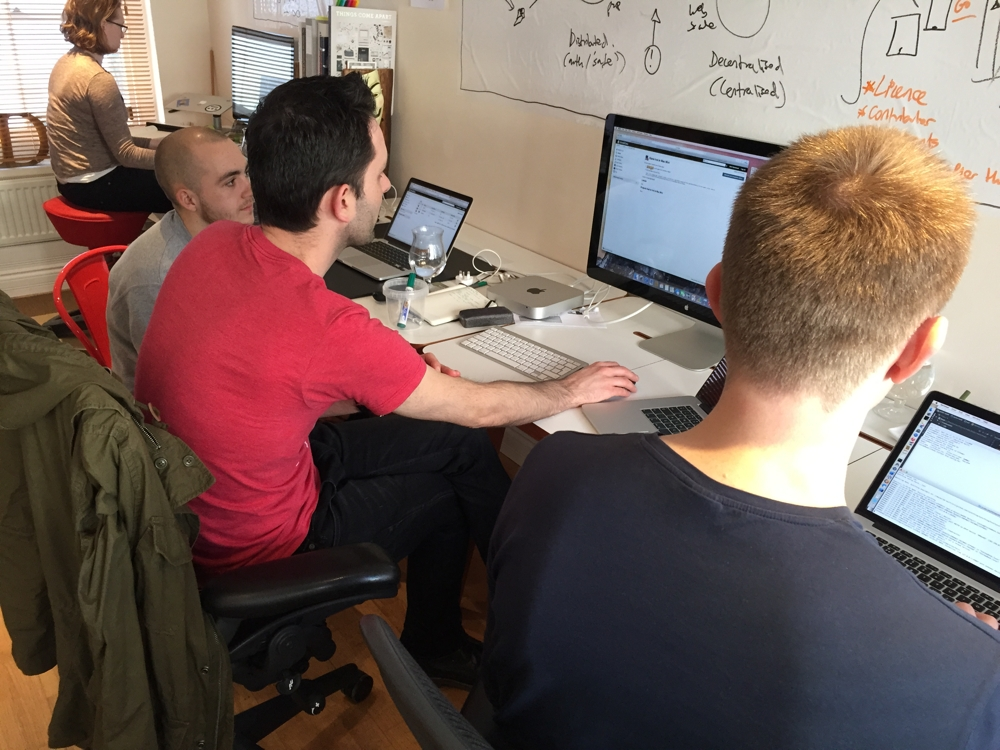

Firing on all cylinders
30th January, 2015 —
I’ll keep this week’s update brief as I’m itching to get back to coding Heartbeat.
Pulse Swift Hack Weekend
Over the weekend, Mark and Stefan flew over from the Netherlands to meet the rest of the team and hack on Pulse Swift. Among other things, we set up a sweet Jenkin’s-based continuous integration environment on our new Mac Mini and, as of approximately 10:20PM British time, Pulse Swift received its first message. Awesome work, folks!

Heartbeat pre-alpha
We’re officially in pre-alpha mode and making great progress on Heartbeat. If you’re in the pre-alpha, we’ve already emailed you with further details.
Back to code
Right, time for me to get back to my two favourite code editors (Xcode and Sublime Text). Have a lovely week and, as always, and on behalf of our little team, thank you for your continued support.